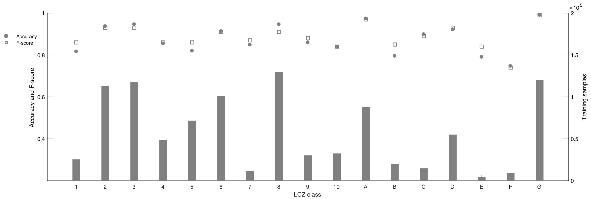

At the moment (12.2020), I am writting a paper about a project that I have been working on. This project is aiming at training a deep learning model using big data to classify the ground features at large scale using satellite images. The first half stage is finished and can be published, I play the role of the main contributor in this project, more specifically, the big data scientist, problems solver and developer. During manual scripting the paper, I generated some "side" figures, I think that might be interested for some readers, however in this blog I will ONLY present my own work, and NO confidential information will be presented.
Some interesting facts about the data.
| Input data volume | ~ 8.6 TB |
|---|---|
| Scale | Global |
| Output DL dataset | ~ 1.3 M |
| Network | CNN |
I was using Python's multiprocessing on a 48 cores machine to process the data, it was smooth and easy, however one special points is how one would group the generated training samples. As it seems Pytorch / Tensorflow would significantly reduce the training speed when it comes to over 1 M training samples. I think there must be a handful methods, the one I worked out is splitting the training dataset into multiple H5 files, which would guarantee the normal training spee, but that also means you should properly index the samples from each H5 file for the random number generate by the data generator.

Merry Christmas!
Researcher / content creator: Cong Luo 😄 @ TUM. 12.2020